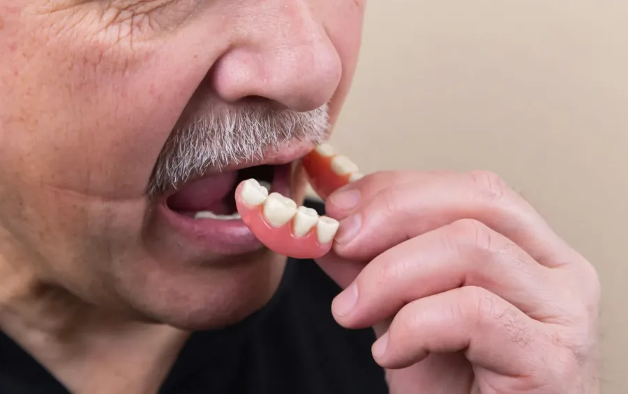
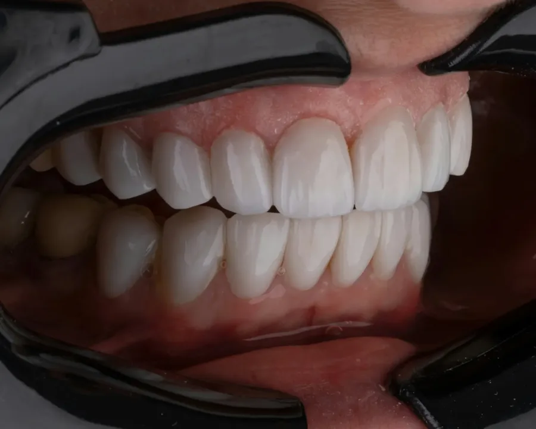
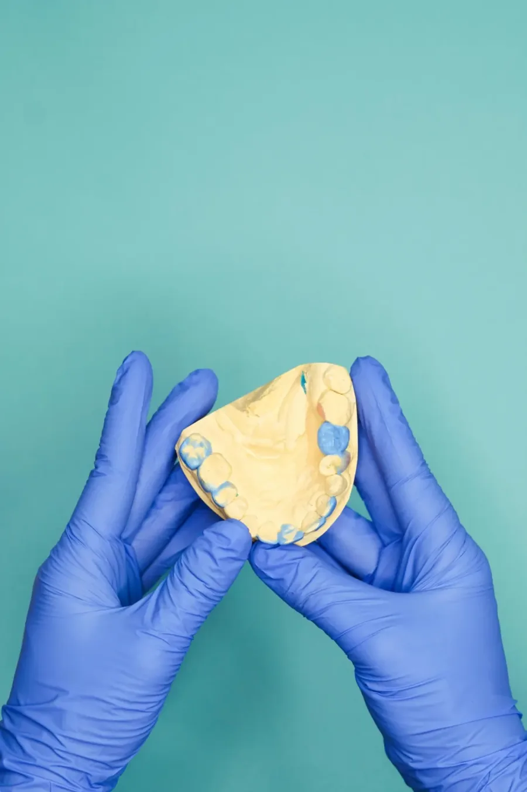
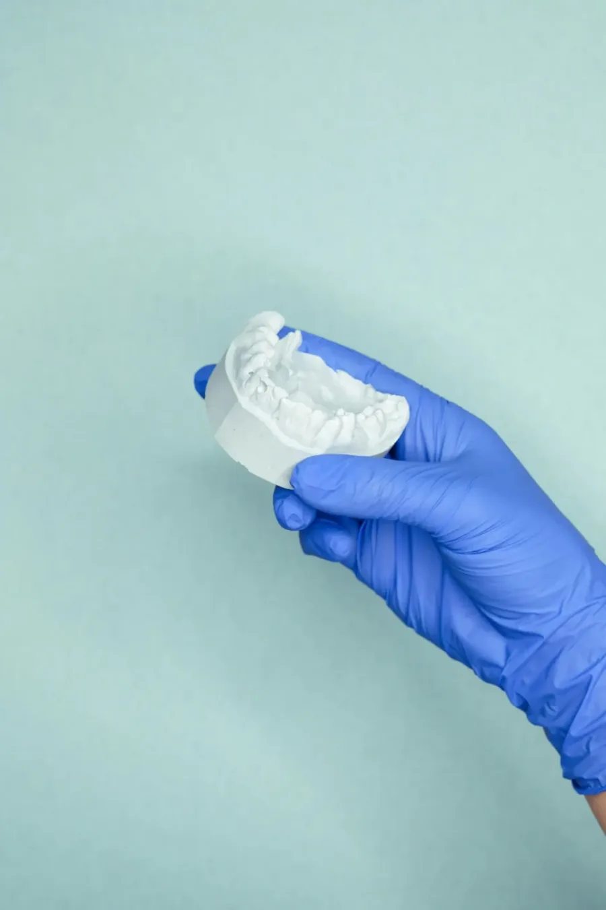

pęknięta lub złamana proteza
Labor-Tech Lublin
Naprawa protez Lublin
Pęknięta, złamana lub niewygodna proteza może znacząco utrudniać codzienne funkcjonowanie. W Labor-Tech oferujemy wsparcie w zakresie napraw, korekt oraz poprawy dopasowania prac protetycznych. Każdy przypadek oceniamy indywidualnie, z naciskiem na precyzję, estetykę i komfort użytkowania.

Najczęstsze sytuacje
Kiedy pacjenci najczęściej zgłaszają się do nas?
Najczęstsze sytuacje to uszkodzenie protezy, pogorszenie jej dopasowania albo dyskomfort podczas codziennego użytkowania. W takich przypadkach warto skonsultować możliwość naprawy lub korekty.
poluzowana proteza, która gorzej się trzyma
proteza powodująca ucisk lub otarcia
uszkodzony element wymagający korekty
potrzeba poprawy estetyki lub wygody użytkowania
Zakres pomocy
W jakim zakresie możemy pomóc?
Naprawa pękniętej lub złamanej protezy
Jeśli proteza uległa uszkodzeniu, pomagamy ocenić możliwość naprawy i przywrócenia jej funkcjonalności. Liczy się tu precyzja wykonania oraz odpowiednie dopasowanie do istniejącej pracy.
Korekta i poprawa komfortu
Jeżeli proteza uwiera, przesuwa się lub nie daje poczucia stabilności, możliwa może być korekta poprawiająca wygodę codziennego użytkowania.
Podścielenie protezy
W sytuacji, gdy proteza przestaje dobrze przylegać, jednym z rozwiązań może być podścielenie, które poprawia jej dopasowanie i komfort noszenia.
Uzupełnienia i odświeżenie pracy
W wybranych przypadkach możliwe są także poprawki estetyczne, uzupełnienia lub odświeżenie pracy protetycznej. Zakres działań zawsze warto ocenić indywidualnie.
Lokalnie w Lublinie
Naprawa protezy w Lublinie - szybko, lokalnie, profesjonalnie
Dla wielu pacjentów znaczenie ma nie tylko sama możliwość naprawy, ale również wygodny kontakt z lokalną pracownią protetyczną. Labor-Tech w Lublinie oferuje wsparcie w zakresie napraw i korekt prac protetycznych, stawiając na jakość wykonania, estetykę oraz indywidualne podejście do każdego przypadku.

Przy naprawach i korektach liczy się nie tylko tempo działania, ale też dobór rozwiązania odpowiedniego do konkretnej pracy protetycznej.
Ważna informacja
Indywidualna ocena każdego przypadku
Nie każda praca protetyczna wymaga tego samego rozwiązania. W zależności od rodzaju uszkodzenia, stopnia zużycia i dopasowania protezy możliwa może być naprawa, korekta, podścielenie albo konsultacja dalszego postępowania. W bardziej złożonych przypadkach współpracujemy również z lekarzem dentystą.
Jeśli problem dotyczy istniejącej protezy, najlepiej skontaktować się możliwie szybko i opisać objawy. To pozwala sprawniej ocenić, jaka dalsza ścieżka działania będzie najbardziej odpowiednia.


Przy korektach oraz podścieleniach znaczenie ma zarówno stan protezy, jak i komfort pacjenta podczas codziennego użytkowania.
FAQ
Najczęstsze pytania
Czy pękniętą protezę można naprawić?
W wielu przypadkach tak, jednak zakres możliwej naprawy zależy od rodzaju uszkodzenia i stanu całej pracy protetycznej.
Co zrobić, gdy proteza uwiera?
Warto skonsultować problem jak najszybciej, ponieważ przyczyną może być pogorszone dopasowanie lub konieczność korekty.
Kiedy warto wykonać podścielenie protezy?
Zwykle wtedy, gdy proteza staje się luźna, mniej stabilna albo przestaje dobrze przylegać.
Czy każdą protezę da się naprawić?
Nie zawsze. Każdy przypadek wymaga indywidualnej oceny, aby dobrać najlepsze i najbezpieczniejsze rozwiązanie.
Jak skontaktować się z Labor-Tech?
Najlepiej telefonicznie lub przez formularz kontaktowy na stronie.
Kontakt
Masz problem z protezą?
Skontaktuj się z nami i opisz swój problem. Pomożemy ocenić, czy w danym przypadku możliwa jest naprawa, korekta lub poprawa dopasowania pracy protetycznej.
Skontaktuj się z nami